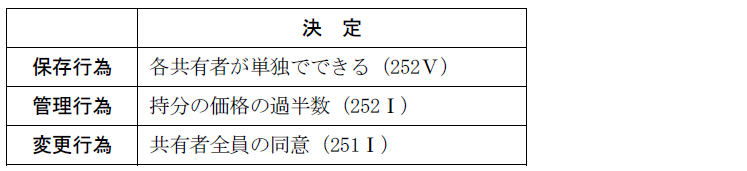
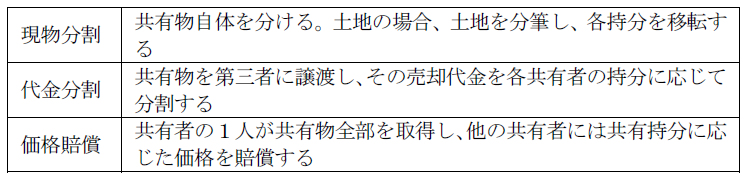

第２編 物権
第３章 所有権
第４節 共有
Ⅰ 共有物の法律関係
1. 持分権
(1) 持分権の意義
：各共有者が共有物に対して有する権利
(2) 持分の割合
持分に関する合意がない場合には、各共有者の持分は、相等しいものと推定する（250条）。
相続による遺産共有の場合には、法定相続分又は指定相続分が各相続人の共有持分となる（898条２項）。
(3) 持分権の譲渡
自由にできる。
(4) 持分権の主張
(a) 持分権確認請求
単独でできる（最判昭40.５.20）。
(b) 持分権に基づく妨害排除請求
保存行為として単独でできる（最判昭31.５.10）。
(c) 持分権に基づく引渡請求
判例には、不可分債権であることを根拠とするもの（大判大10.３.18）と、保存行為であることを根拠とするもの（大判大10.６.13）がある。
(d) 持分権に基づく登記請求
共有名義変更請求（大判明37.４.29）、持分権移転登記請求（大判大11.７.10）。
不動産の共有者の１人は、共有不動産について実体上の権利を有しないのに持分移転登記を経由している者に対し、単独でその持分移転登記の抹消登記を請求できる（最判平15.７.11）。
(e) 持分権に基づく時効の完成猶予のための措置
各共有者は、持分権に基づき時効の完成猶予のための措置をとることができると解される。
(f) 持分権に基づく損害賠償請求
共有物の侵害に対して、共有者は自己の持分についてのみ損害賠償請求をすることができる（最判昭41.３.３）。
2. 共有物の使用
(1) 使用
各共有者は、共有物の全部について、その持分に応じた使用をすることができる（249条１項）。249条は「使用」と規定するが、処分については別に扱うことを示すにすぎず「収益」も含まれる。
(a) 協議
具体的な使用・収益の方法に関する協議は共有物の管理に属するから、持分の価格の過半数で決する。共有物を使用する共有者があるときも、同様とする(252条１項)。つまり、事実上共有物を使用する共有者がいたとしても、その共有者の同意なくして共有物の使用方法を定めることができる（252条１項後段）。
(b) 協議に基づく特定の共有者の使用の変更
持分の価格の過半数の決定により、特定の共有者が共有物を使用している場合であっても、上記（a）の協議によって当該決定を変更することができる（252条１項後段）。
もっとも、当該決定の変更が共有物を使用する共有者に特別の影響を及ぼすべきときは、その共有者の承諾を得なければならない（252条３項）。「特別の影響を及ぼす」かは具体的な事案によるが、共有物の使用者の変更などは特別の影響を及ぼすと考えられる。
ｅｘ．甲建物を共有するＡ、Ｂ及びＣがおり（持分割合は平等とする）、全員の合意による決定に基づきＣが単独で甲建物を使用している場合、ＡとＢの合意で使用者を「Ａ」と定めることができるが、この場合にはＣの承諾が必要である。
(2) 使用対価の償還
共有物を使用する共有者は、別段の合意がある場合を除き、他の共有者に対し、自己の持分を超える使用の対価を償還する義務を負う（249条２項）。
(3) 善管注意義務
共有者は、善良な管理者の注意をもって、共有物の使用をしなければならない（249条３項）。共有物を使用する共有者は、他の共有者との関係では、他人の物を管理しているのと同じなので、善良な管理者の注意をもって共有物を保存すべきだからである。
3. 共有物に関する決定

(1) 保存
保存行為は、各共有者がすることができる（252条５項）。
「保存行為」とは、共有物の修補、妨害排除等、共有物の現状を維持する行為をいう。
共有地の不法占拠者に対する妨害排除・明渡請求は保存行為にあたる（大判大７.４.19）。
(2) 管理
(a) 要件
共有物の管理に関する事項は、各共有者の持分の価格の過半数で決する（252条１項前段）。共有物を使用する共有者があるときも、同様とする(252条１項後段)。
当該決定が共有物を使用する共有者に特別の影響を及ぼすべきときは、その共有者の承諾を得なければならない（252条３項）。
(b) 「管理」に属する行為
ⅰ 「管理」とは、共有物の変更を伴わない利用・改良行為をいう。共有物の賃貸借契約の解除や、土地の地目転換を伴わない共有地の整地などがこれに当たる。また、共有物の賃貸借契約の解除も、共有者の持分の価格の過半数で決するので、解除権の不可分性についての544条１項は適用されない（最判昭39.２.25）。
ⅱ 共有物に以下の期間を超えない賃借権その他の使用及び収益を目的とする権利（以下「賃借権等」という。※）を設定することができる（252条４項）。
① 樹木の栽植又は伐採を目的とする山林の賃借権等 １０年
② ①以外の土地の賃借権等 ５年
③ 建物の賃借権等 ３年
④ 動産の賃借権等 ６か月
(3) 変更
(a) 原則
各共有者は、他の共有者の同意を得なければ、共有物に変更を加えることができない（251条１項）。
「変更」とは、山林の伐採のような物理的変更の他、売却や地上権・抵当権の設定等の法律的処分も含むと解されている。
(b) 軽微変更の場合
その形状又は効用の著しい変更を伴わないもの（軽微変更）は、各共有者の持分の価格の過半数で決することができる（251条１項かっこ書、252条１項）。
4. 共有物の変更・管理に関する非訟手続の規定
(1) 意義
(a) 変更に関する裁判
共有者が他の共有者を知ることができず、又はその所在を知ることができないときは、裁判所は、共有者の請求により、当該他の共有者以外の他の共有者の同意を得て共有物に変更を加えることができる旨の裁判をすることができる（251条２項）。
(b) 管理に関する裁判
裁判所は、次の①又は②に掲げるときは、当該各号に規定する他の共有者以外の共有者の請求により、当該他の共有者以外の共有者の持分の価格に従い、その過半数で共有物の管理に関する事項を決することができる旨の裁判をすることができる（252条２項各号）。
① 共有者が他の共有者を知ることができず、又はその所在を知ることができないとき
② 共有者が他の共有者に対し相当の期間を定めて共有物の管理に関する事項を決することについて賛否を明らかにすべき旨を催告した場合において、当該他の共有者がその期間内に賛否を明らかにしないとき
なお、当該管理に関する決定が、共有者間の決定に基づいて共有物を使用する共有者に特別の影響を及ぼすべきときは、その承諾を得なければならない（252条３項）。
(2) 趣旨
所在不明の共有者や共有物の管理に関心のない共有者がいる場合に、共有物の利用等を円滑に行うため、創設された。
(3) 手続の流れ
（必要な調査（※）・252条２項２号の催告）
↓
①共有者による申立て
↓
②裁判所による公告（非訟法85条２項）、裁判所による通知（非訟法85条３項）
↓
③（異議がない場合）裁判所による共有物変更許可決定等（非訟法85条２項３号、同条３項３号、同条４項）
5. 費用負担等
(1) 各共有者は、その持分に応じ、管理費用その他共有物に関する負担を分担する（253条１項）。当該費用を負担しない共有者が１年以内に支払をしなければ、他の共有者は相当の償金を支払ってその者の持分を取得できる（253条２項）。
(2) 共有者が共有物について他の共有者に債権を有する場合、その特定承継人に対しても行使ができる（254条）。
(3) 共有者の１人がその持分を放棄したとき又は死亡して相続人がないときは、その持分は、他の共有者に帰属する（255条）。
1. 共有物の管理者の選任
共有物の管理者の選任及び解任は、共有物の管理行為にあたるため、各共有者の持分の価格の過半数で決する（252条１項かっこ書）。
共有物に関して事あるごとに共有者間で意思決定を行うよりも、特定の管理者を選任し、管理を委ねた方が共有物の円滑な管理ができると考えられ、共有物の管理者についての規定が創設された。
2. 共有物の管理者の権限
(1) 共有物の管理に関する行為
共有物の管理者は、共有物の管理に関する行為をすることができる（252条の２第１項本文）。ただし、共有物に変更（※）を加えるには、共有者の全員の同意が必要である（252条の２第１項ただし書）。
(2) 変更に関する裁判の請求
共有物の管理者が共有者を知ることができず、又はその所在を知ることができないときは、裁判所は、共有物の管理者の請求により、当該共有者以外の共有者の同意を得て共有物に変更を加えることができる旨の裁判をすることができる（252条の２第２項）。
3. 共有物の管理者の職務
共有物の管理者は、共有者が共有物の管理に関する事項を決した場合には、これに従ってその職務を行わなければならない（252条の２第３項）。
管理に関する決定に違反してした共有物の管理者の行為は、共有者に対してその効力を生じない。ただし、共有者は、これをもって善意の第三者に対抗することができない（252条の２第４項）。
Ⅱ 共有関係の解消
1. 分割請求（256条）
いつでも請求することができるが（256条１項本文）、５年を超えない期間内の分割禁止特約をすることもできる（256条１項ただし書）。
この禁止特約は更新できるが、その期間は更新の時から５年を超えることができない（256条２項）。
なお、共有物につき権利を有する者（地上権者・賃借権者・質権者等）及び各共有者の債権者は、自己の費用で分割に参加することができる（260条１項）。そして、参加の請求があったにもかかわらず、請求者を参加させないで分割したときは、その分割は請求者に対抗することができない（260条２項）。
2. 分割の方法（258条）
(1) 原則－協議分割
協議は共有者全員でしなければならない（大判大13.11.20）。

(2) 例外－裁判所による分割
(a) 裁判所による分割の要件
共有者間の協議が調わないとき又は協議をすることができないときは、裁判所に分割を請求できる（258条１項）。
「協議をすることができないとき」とは、共有者の一部に協議に応じる意思がなく、全員で協議ができない場合などが当たる。
(b) 分割の方法
裁判所は、次に掲げる方法により、共有物の分割を命ずることができる（258条２項各号）。
① 共有物の現物を分割する方法（現物分割）
② 共有者に債務を負担させて、他の共有者の持分の全部又は一部を取得させる方法（全面的価格賠償）
ｅｘ．一部の者に金銭を支払い、他の者の共有としておくことができる（最判平８.10.31）
上記①及び②の方法により共有物を分割することができないとき、又は分割によってその価格を著しく減少させるおそれがあるときは、裁判所は、その競売を命ずることができる（258条３項）。
裁判所は、共有物の分割の裁判において、当事者に対して、金銭の支払、物の引渡し、登記義務の履行その他の給付を命ずることができる（258条４項）。
(c) 持分譲渡があった場合
判例は、共有物分割の訴えは、共有者間の権利関係をその全員について画一的に創設する訴えであるから、持分譲渡があっても、これをもって他の共有者に対抗できないときには、共有者全員に対する関係において、右持分がなお譲渡人に帰属するものとして共有物分割をなすべきであるとしている（最判昭46.6.18）。
3. 遺産分割と共有物分割
(1) 原則
共有物の全部又はその持分が相続財産に属する場合において、共同相続人間で当該共有物の全部又はその持分について遺産の分割をすべきときは、当該共有物又はその持分について共有物分割訴訟による分割をすることができない（258条の２第１項）。
従来の判例理論を明文化したものである。遺産共有の財産の分割に関しては、以下のような判例がある。いずれも、共同相続人の有する遺産分割上の権利（具体的相続分による分割をする権利等）を害してはならないという考え方を基礎としている。
(a) 遺産共有の財産の分割
遺産共有の財産を分割するには、遺産分割をするべきであって、共有物分割の訴えを提起することはできない（最判昭62.９.４）。
(b) 遺産共有の状態にある共有持分と他の共有持分とが併存する場合
共有物について、遺産分割前の遺産共有の状態にある共有持分と他の共有持分とが併存する場合、遺産共有持分と他の共有持分との共有関係の解消は共有物分割の手続によるべきであり、遺産共有関係の解消は遺産分割手続によるべきである（最判平25.11.29）。
(2) 例外－相続開始から１０年経過した場合
共有物の持分が相続財産に属する場合において、相続開始の時から10年を経過したときは、258条の２第１項の規定にかかわらず、相続財産に属する共有物の持分について共有物分割訴訟による分割をすることができる（258条の２第２項本文）。
上記（1）（b）の場合であっても、相続開始の時から10年経過すると、具体的相続分の主張ができなくなり（904条の３本文）、遺産分割上の権利に配慮する必要がなくなるため、共有物分割の手続の中で遺産共有状態を解消することを認めたものである。
(3) 相続人による異議の申出
共有物の持分が相続財産に属し、当該共有物の持分について遺産の分割の請求があった場合において、相続人が当該共有物の持分について共有物分割訴訟による分割をすることに異議の申出をしたときは、（2）の規定による共有物分割はできない（258条の２第２項ただし書）。
この申出は、当該相続人が258条１項の規定による分割請求を受けた裁判所から当該請求があった旨の通知を受けた日から２か月以内に当該裁判所にしなければならない（258条の２第３項）。
4. 分割の効果
(1) 共有関係の解消
(2) 担保責任の発生（261条）
各共有者は、他の共有者が分割によって取得した物について、売主と同じく、その持分に応じて担保の責任を負う（261条）。
(3) 証書の保存（262条）
分割が完了したときは、各分割者は、その取得した物に関する証書を保存しなければならない（262条１項）。
証書は、その物の最大の部分を取得した者が保存しなければならないが（262条２項）、最大の部分を取得した者がないときは、分割者間の協議で証書の保存者を定める（262条３項前段）。協議が調わないときは、裁判所が指定する（262条３項後段）。
証書の保存者は、他の分割者の請求に応じて、その証書を使用させなければならない（262条４項）。